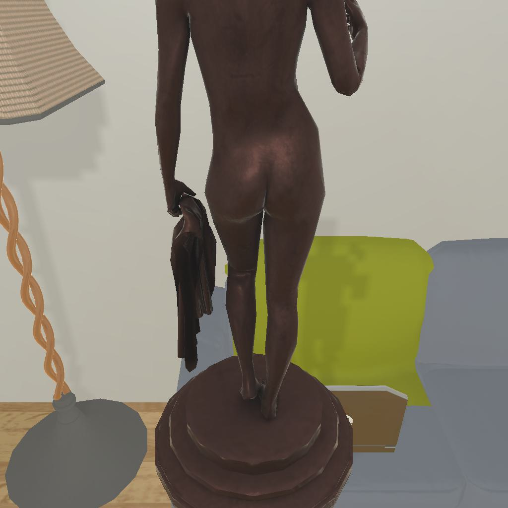
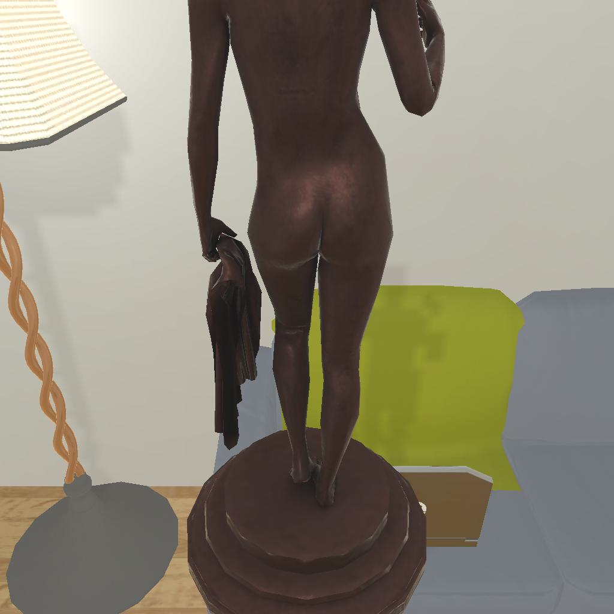

---------------------------------------------------------task: 4---------------------------------------------------------
--------------------------------------------------------------------------------------------------------------------------------------------------------------------
--------------------------------------------------------------------------------------------------------------------------------------------------------------------
Step:--------------------------------------------------------------------------12-------------------------------------------------------------------------------
----------------------------------------
VLM Prompt:
Image1:
Image2:
**Instruction**
1. Analyze the provided images to identify all visible household objects and compare the difference between images (e.h. whether the object is opened or not and taken on hand or not), focusing on those relevant to the task description "look at statue under the floorlamp."
2. Use the analysis of images and the task hint "The agent must find an object of the desired type, locate and turn on a light source with the desired object in-hand." to answer the question: what is the most reasonable action in the choices for the task description "look at statue under the floorlamp"?
3. Decide and write the answer using the template: The answer is: (i): , where i is the real number. If there is no desired object in images, search every place based on **Initial Observation** to find the object. And if no one is exactly correct, choose a similar answer.
**Initial Observation**
You are in the middle of a room. Looking quickly around you, you can see armchair (1), coffeetable (1-2), sidetable (1), garbagecan (1), drawer (1), sofa (1), diningtable (1)
**Answer Choices**
(1): go to armchair 1
(2): go to coffeetable 1
(3): go to garbagecan 1
(4): go to drawer 1
(5): go to sofa 1
(6): go to coffeetable 2
(7): go to diningtable 1
(8): put statue 1 in/on sofa 1
(9): use floorlamp 1
(10): examine sofa 1
**Answer**
Let's think step by step by following the instructions.
----------------------------------------
----------------------------------------
Original Response:
Image Analysis:
In both images, we can see a statue held by a hand. The background in Image 1 is plain, while Image 2 includes a floor lamp, an armchair, and a side table. No household objects in Image 1 are visible and relevant to the task description. However, in Image 2, we can see a floor lamp beside the armchair which is relevant to the task "look at statue under the floorlamp."
Task Hint Analysis:
The agent must find an object of the desired type (statue) which is already in hand in the images provided. Then, locate and turn on a light source (floor lamp) with the desired object (statue) in-hand to accomplish the task of looking at the statue under the floor lamp.
Based on the analysis, the most reasonable action for the task description "look at statue under the floorlamp" would be to use the floor lamp since the statue is already in hand and the floor lamp is visible in the image, which can be turned on to look at the statue under it.
The answer is: (9): use floorlamp 1
----------------------------------------
----------------------------------------
>>> Refine Original VLM Response and Get Pure Action: use floorlamp 1
----------------------------------------
-----------------------------------------------------------------
Running time: 10.769796133041382 seconds
Total Money: 1.5357700000000003
-----------------------------------------------------------------
-----------------------------------------------------------------
Text Observation:You turn on the floorlamp 1.
-----------------------------------------------------------------
SUCCEED